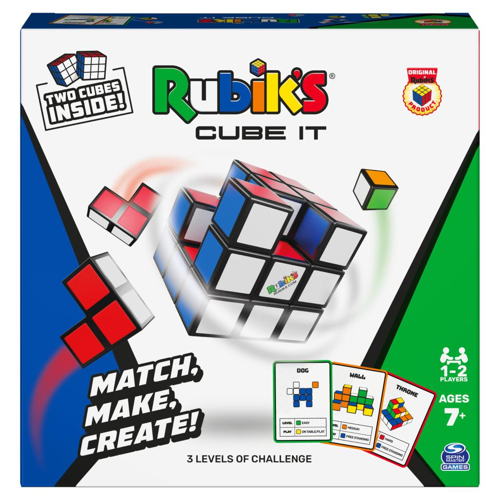
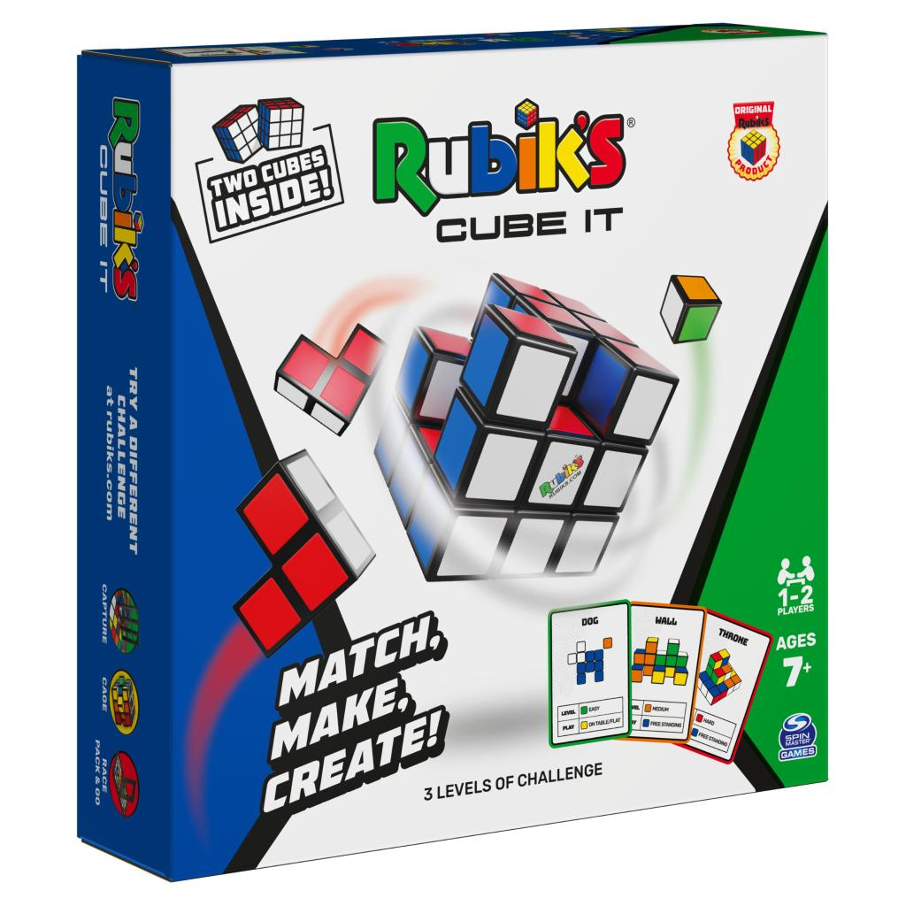

Rubik’s Cube It
Rubik’s Cube It is the ultimate 2-player block-building puzzle game. Choose your level-
easy, medium, or hard. Flip the card and race to match that shape. Face the challenge and be the best on
the block! The rules of this game are simple: Match, Make, and Create! Two cube sets are included in
this game! Each set forms one cube. If you are a fan of the original Rubik’s Cube 3D puzzle, prepare
yourself for hours of sequence puzzle game fun with your opponent or solo. This is a hands-on activity
cube puzzle game for your next game night Puzzle-loving adults and kids ages 7 and up will love this
fast-paced, strategic 3D Cube game. Invented in 1974 by Ernő Rubik, the original color-matching puzzle
kids’ toy- the Rubik’s Cube- was created to help students understand three-dimensional problems. The
prototype Magic Cube did things that the world had not seen before. It turned, it twisted and yet it did
not break. Adding 54 colorful stickers to the six sides gave the puzzle its iconic look. Over 40 years
of history has led the Rubik’s Cube to become one of the best-selling toys ever. With the new Rubik’s
Cube It game- simply match, make, and create to become the puzzle master of your house. Show us what you
can build with this puzzle game! This smart game makes the perfect teen boys gift idea or a stocking
stuffer for anyone who loves a challenge. Share your creativity on our social channels using
#RubiksCube.